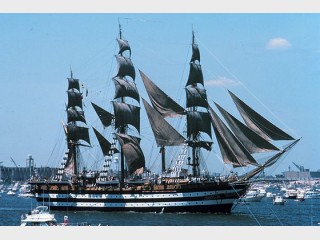

Le 21 mars 1780, le jeune major général de La Fayette embarque à bord de l'Hermione. Il part combattre aux côtés des insurgés américains qui luttent pour leur indépendance. Il débarque à Boston après 38 jours de traversée et rejoint le général Washington pour lui annoncer l'arrivée imminente des renforts français Dix-huit mois plus tard, les insurgents américains, auxquels s'est joint La Fayette remportent dans la baie de la Chesapeake sur mer, puis à Yorktown sur terre des victoires décisives avec l'appui des troupes françaises conduites par Rochambeau et de Grasse. Depuis juillet 1997, l'Association Hermione-La Fayette s'est lancée dans une formidable aventure, la reconstruction de la frégate Hermione, navire, qui, en 1780, permit à La Fayette de rejoindre les insurgés américains en lutte pour leur indépendance. https://www.hermione.com/accueil/

L’Amerigo Vespucci est un voilier-école italien. Il appartient à la Marina militare, la marine militaire italienne, utilisé à la formation des élèves officiers. Il est actuellement l'un des plus anciens trois-mâts carré à naviguer, le plus ancien navire-école de la marine italienne en service et un des plus grands voiliers école militaire du monde. Le voilier porte le nom du célèbre navigateur italien Amerigo Vespucci. Il est basé à Gênes. Au cours de la dernière décennie, en plus de la formation à la mer, le voilier a souvent joué le rôle d'ambassadeur de l'art, de la culture et de l'ingénierie italienne Participation à l'Armada : 1989, 2008